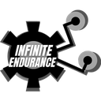
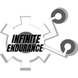

Infinite Endurance Technologies · 2021–22Founding an IoT predictive-maintenance startup
What the product did
- SensorsNon-invasive monitoringPower & uptime · hydraulic & thermal · vibration
- AnalysisReal-time machine healthOn legacy machines in small factories
- OutputLive dashboardsSee a breakdown coming
- MVP built
- Team of four hired
- Incubation secured
- 5 factory pilots
Context
Predictive maintenance was built for large plants. India's roughly 4 million manufacturing SMEs, many running legacy machines, had no affordable way to see a breakdown coming.
What I did
- Founded Infinite Endurance Technologies to bring IoT-based machine-health monitoring to small and medium manufacturers.
- Built the MVP: non-invasive power and uptime monitoring, hydraulic and thermal monitoring, and real-time vibration analysis, all on live dashboards.
- Hired and led a team of four.
- Secured incubation for the company.
- Piloted the product across five manufacturing units.
Results
5manufacturing units piloted
4people hired
MVPto incubation